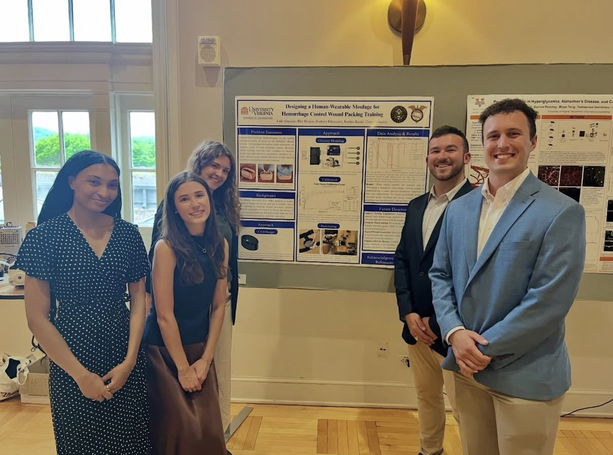
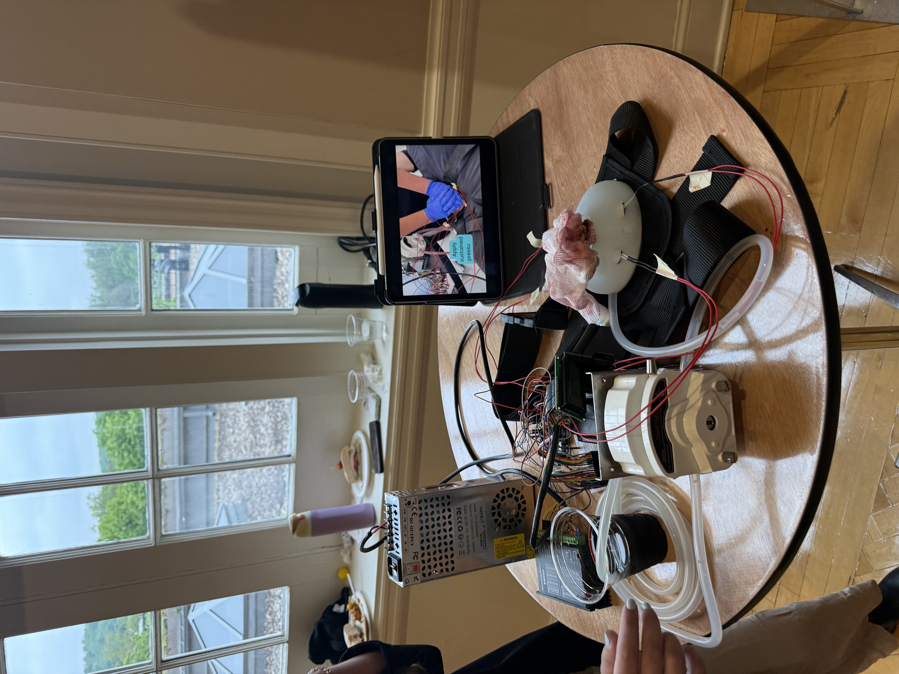

Designing a Human-Wearable Moulage for Hemorrhage Control Wound Packing Training
Overview
Uncontrolled bleeding is the leading preventable cause of death on the battlefield. Wound packing is a lifesaving intervention when tourniquets are ineffective, such as high junctional injuries. However, current training relies on static manikins or moulage devices that lack real time, quantitative feedback. As a result, trainees cannot reliably determine if their packing would have successfully controlled bleeding.
The Defense Innovation Unit (DIU) proposed a student project to design, prototype, and test a wearable device that simulates a bleeding wound, providing real-time feedback using pressure sensors to inform the trainee of proper pressure techniques. The groin/upper thigh area was selected for training realism, durability, and safety.
Approach
A CAD model of a wound cavity mould was designed using anatomically accurate geometry, including a 50 mm entry point and a 29 mm depth, simulating a gunshot wound to the thigh. The mould was iterated and printed, and silicone was poured to create the simulated wound cavity.
An elaborate circuit was constructed including a stepper motor, peristaltic pump, four FSR402 force sensors, and an LCD display. The circuit was coded so that the peristaltic pump flowed simulated blood out of the silicone wound cavity at a rate of 350 mL/min. If adequate pressure was read (average across four sensors), the flow would begin to decay. An LCD screen showed time elapsed since test start, as well as if adequate pressure was being applied to reduce blood flow. If it was not, the flow rapidly restored to 350 mL/min.
Outcome
The results included a successful chart illustrating the flow rate decaying over time while adequate pressure is applied, and flow restoration when adequate pressure is not sustained. The results addressed the primary aim of developing a responsive hemorrhage training system by demonstrating a clear, pressure-dependent system. Additionally, the system successfully integrated real-time sensor feedback and pump control, achieving consistent and physiologically relevant flow modulation.
Some future directions of this project include replacing current pressure sensors with higher range sensors, incorporate depth sensing to determing if the wound packing is deep enough to block bleeding, and to expand the range of different wound geometries.
Media

